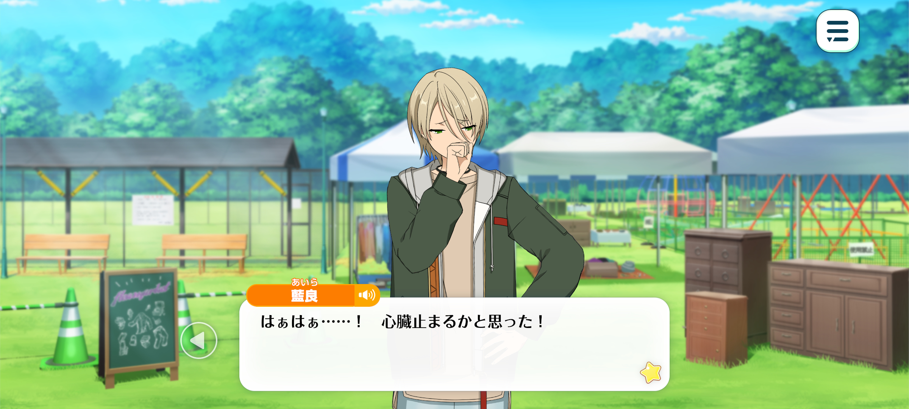
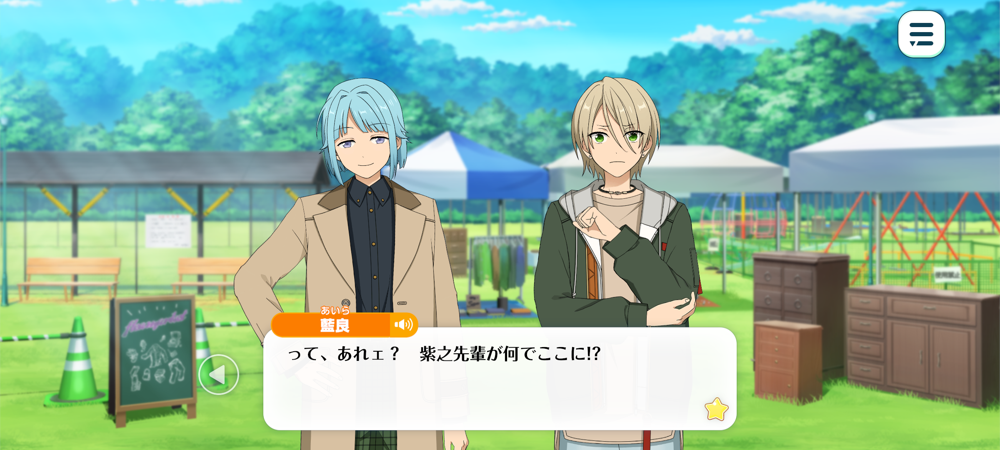
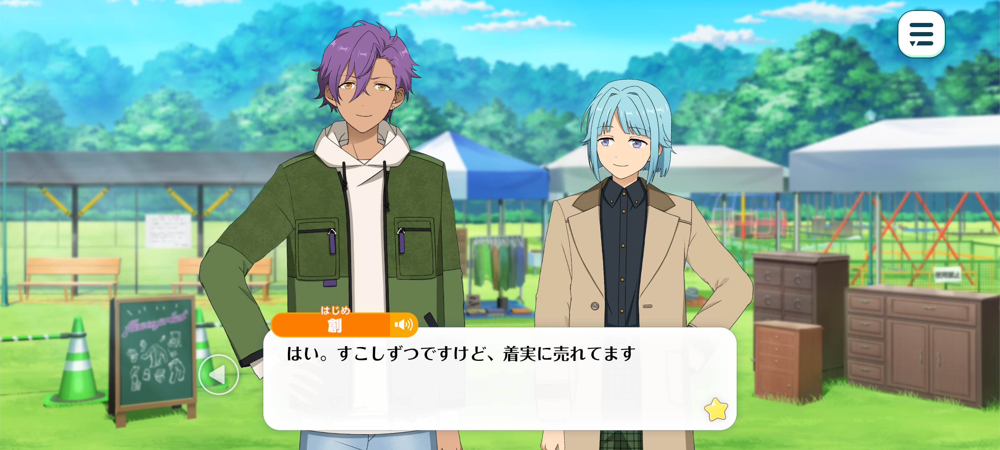

Scout! Dolly Night
Memories Of A Doll – Chapter 3


Time: Two hours later

Aira: Haa… haa…! I thought my heart was going to give out!
Today’s my day off, so I was planning on having a nice lie-in…
I never imagined I'd wake up to find Sakuma-senpai's sleeping face right there in front of me!
I completely panicked, hurriedly got dressed and made a break for it…!
Uuu… Even though we share a room, I still haven't gotten used to living with Tenshouin-senpai and Sakuma-senpai…! The happiness is immense, but the emotional strain is ten times worse!
Pah, haa… (takes a deep breath)
Fuaah… I think I've calmed down now. A little, anyway…
Nn~. But what should I do now? I don't have anything planned, so I'm not sure where to go…
…Hm? Is that park holding a flea market?
I wonder if I could find a room divider to buy. Maybe if I put one around my bed, I'd finally have a little peace of mind…

Hajime: Thank you very much for your purchase…♪
Aira: Eh? Is that…? What's Shino-senpai doing here!?
Hajime: Ah, Shiratori-kun. Have you come to have a look around the market, too?
Aira: Uhhh, yes! I just happened to be passing by, and I got a little curious…
No, wait! Why are you at a flea market!? It's dangerous for idols to sell their personal belongings, you know!
Hajime: Dangerous…? Fufu. There's nothing to worry about. It's a very peaceful event.
Aira: No, that's not what I mean…! There's no security, no sales staff…! Doesn't it worry you what might happen if something goes wrong?!
Gaaah! It’s hard to explain since I’m speaking as one of them who also goes on shopping sprees for idol merch…!
Mitsuru: Hajime-chan, you okay? What's going on?
Adonis: It seems one of our customers is concerned about safety. Is there something wrong with any of the things we're selling?
Aira: Uwaah! Otogari-senpai and Tenma-senpai…! You two came to the flea market, too!?
Hajime: Yep! The three of us came together to sell some things we no longer need.
After a while, once everything had calmed, Otogari-senpai and Mitsuru-kun went around the park and checked out some of the other stalls.
Adonis: I never expected to see you here as one of our customers, Shiratori. By the way, what was it you said earlier? That there was some danger here?
Aira: N-no! If you're here, Otogari-senpai, then there's nothing to worry about! Sorry, I was getting ahead of myself!
I mean, with someone as incredibly muscular as you around, no creepy fans are going to dare come near us, right?
Mitsuru: Huh? Maybe I'm missin' somethin', but wouldn't it be better if nothin' bad happened in the first place~?
Anyway, since Ai-chan's here and we happened to bump into each other… It's like fate brought us together or somethin', y'know? Let's go check out the other stalls together!
Aira: I-is that really okay!? I mean, I'd love to come along, but wouldn't I just be getting in your way…?
Mitsuru: Getting in the way? Whaddaya mean?
Ai-chan came all this way, didn't he? C'mon, let's go find some real bargains~! ☆
Aira: Waaah! A-alright, then!

Adonis: Fufu. Tenma seems to be having a wonderful time.
Anyhow, Shino, how are sales going?
Hajime: They're going quite steadily, thank you. Things are selling little by little.
I've been letting people buy whatever catches their eye, so…
It might be nice if we could approach a few more people and let them know about our stall. Sales seem to be slowing down a little.
After all, we're idols. I wouldn't want to draw too much attention to ourselves and cause a commotion. Besides, I don't really want to advertise these things as “Shino Hajime’s belongings.”
Adonis: You must be getting tired from looking after the stall all this time, Shino. Would you like for me to take over for a little while?
You could go and have a look around the market. Everything has a price tag, so I'll know how much to charge.
Hajime: Well, if you insist…♪
There might be things here that I need, even if someone else no longer does. I'll make the most of this rare opportunity…♪
Adonis: Ah, yes. Please, enjoy yourself.
I actually want to try looking after the stall myself. Perhaps I'll gain a better understanding of how people feel about the things they own.
I'm sure this experience will help me deepen my understanding of animism.